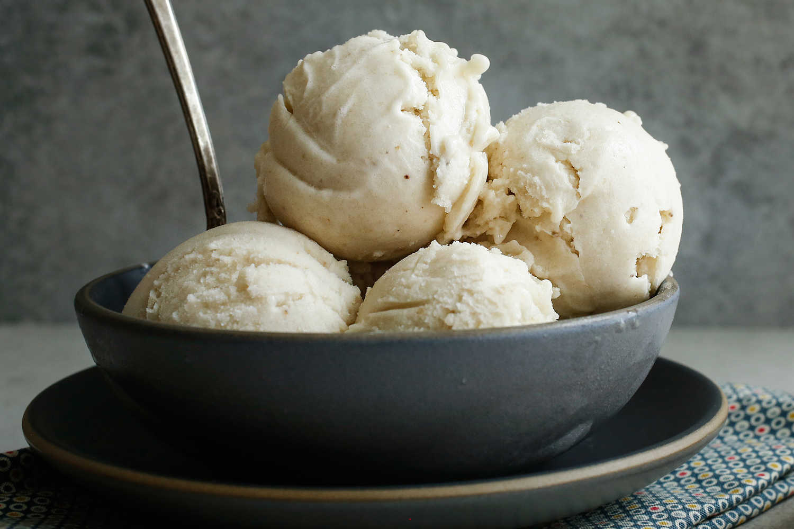

Healthy Banana Icecream

Description
This banana icecream recipe is not only delicious, but also healthy. It is easy to make with ingredients that you will most likely find at home!
Ingredients
- 2 frozen bananas, cut into thirds
- 1-2 tablespoons unsweetened almond milk (or any milk you prefer)
- 1-2 tablespoons maple syrup, honey, or monk fruit
Steps
- Blend bananas in a blender or food processor until they have a smooth and creamy consistency.
- Add the milk and sweetener of choice. Blend until all mixed.